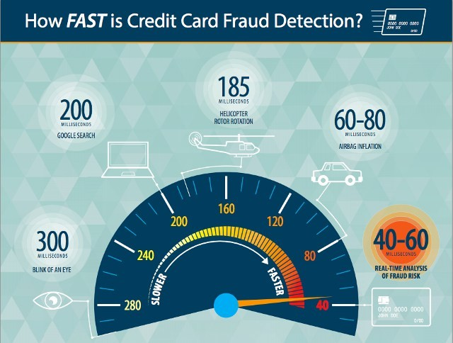
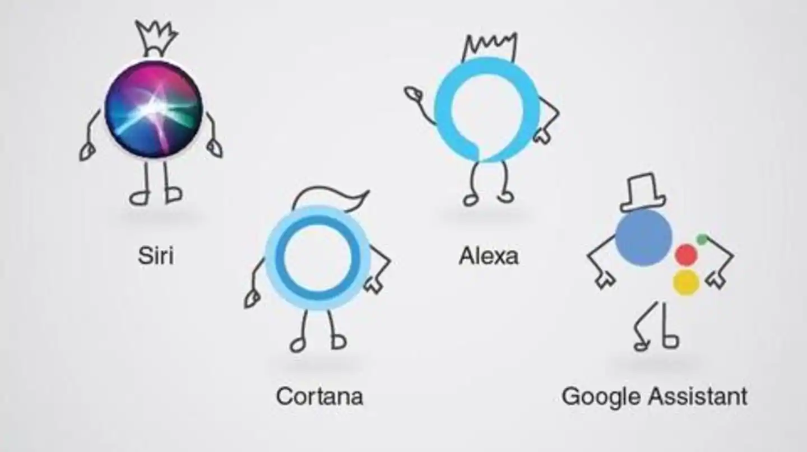

Self-driving cars are becoming increasingly a reality with each passing moment. From Google's self-driving car project to Tesla's "autopilot" feature, it won't be long before AI is standard issue. In fact, some high-end vehicles come with AI parking systems already.The Washington Post recently reported that Google is developing an algorithm that could let cars learn to drive, much like your younger self. Granted without the panic and fear of the instructor.
Financial service companies have found some interesting applications of artificial intelligence. If you hold any kind of credit card or bank card, you've probably had a potential fraud message of some kind. It could have been an email or text or even phone call. Many high street banks have offered this kind of service for several years now.They use AI to detect unusual activity on your account to block potential fraud. You'll often be asked to authorize the transaction or simply say it was you.
Virtual assistants work pretty much in a similar way to other AI applications we've already covered. They do, however, conduct a some very particular tasks unique to them. The likes of Siri, Google Now and Cortana are all examples of this technology. If you aren't aware, though we'd be surprised, you can actually speak to them to help you find something. It could be location, general information, help schedule your day or set reminders, etc. These clever assistants then provide you with the requested info or send commands to other apps, depending on the request.
Yes just like Minority Report, scientists from Shangai Jiao Tong University have managed to develop a form of AI that identifies criminals with an accuracy of around 89.5 percent. It achieves this by using machine-vision algorithms. The AI uses still photos of suspects and real criminals all without facial hair. Not only did the AI identify the criminals with a high success rate but also managed to provide typical facial features that might indicate the person is less than law abiding.
Applications of artificial intelligence can be used to disaster events for finding stranded survivors. Traditionally, you'd either have to go out in person and search on foot or look at aerial footage of the disaster areas. Sifting through footage and photo is very time consuming indeed and any time lost could potential mean someone dies before help can arrive.
 